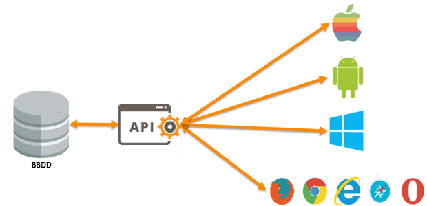

Para garantizar el éxito de una API, es fundamental definir objetivos claros antes de programar. Se debe seguir el estándar REST, utilizando formatos de intercambio como JSON o XML. La seguridad mediante autenticación (como JWT o OAuth) y la documentación exhaustiva (usando herramientas como Swagger o Postman) son pilares críticos para que otros desarrolladores puedan integrar el servicio de manera eficiente.

El ciclo de vida de una Web API consta de fases estructuradas para asegurar su calidad, escalabilidad y mantenimiento a largo plazo:
/api/v1/usuarios) y asignación correcta de verbos HTTP (GET para obtener, POST para crear,
PUT/PATCH para actualizar, DELETE para eliminar).Los contenedores son unidades estándar de software que empaquetan el código y todas sus dependencias para que la aplicación se ejecute de forma rápida y confiable de un entorno informático a otro.
El desarrollo Cloud Native es un enfoque para construir y ejecutar aplicaciones que aprovechan al máximo las ventajas del modelo de entrega de computación en la nube (Cloud Computing).